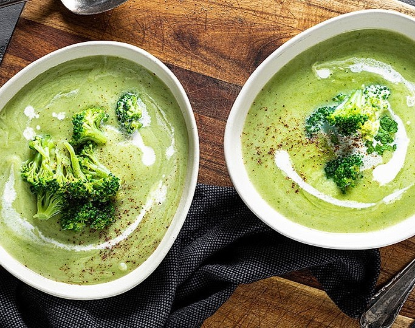

Zutaten
- 500 g
- 1 Liter
- 2 Stück
- 2 Stück
- 1 Zehen
- 40 g
- 1 becher
- 1 Tl
- etwas
- Brokkoli
- Gemüsebrühe
- Kartoffeln
- Zwiebeln
- Knoblauch
- Butter
- Sahne
- Senf
- Zitonensaft
- Salz
- Pfeffer
- Muskatnuss
Zubereitung:
- 500g Brokkoli zerkleinern, die Röschen vom Strunk abschneiden und waschen. Den Strunk grob schälen und in kleine Stücke schneiden.
- 2 Zwiebeln, 1 Knoblauchzehe und 2 Kartoffeln schälen und würfeln.
- 40g Butter in einem Topf erhitzen und die Zwiebeln und den Knoblauch darin andünsten.
- Die Kartoffeln und den Brokkoli hinzufügen und kurz mitdünsten.
- 1 Liter Gemüsebrühe angießen und alles ca. 20 Minuten köcheln lassen.
- Die Suppe pürieren und 1 Becher Sahne hinzufügen.
- Mit 1 Tl Senf, etwas Zitronensaft, Salz, Pfeffer und Muskatnuss abschmecken.